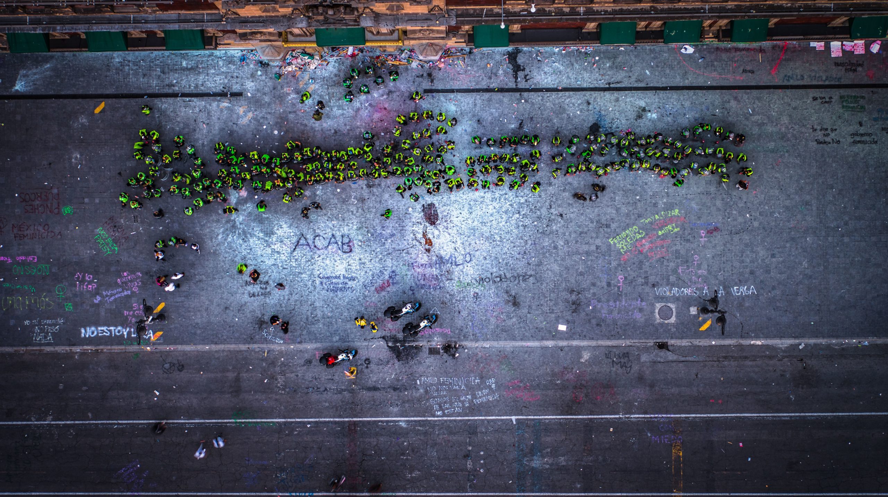
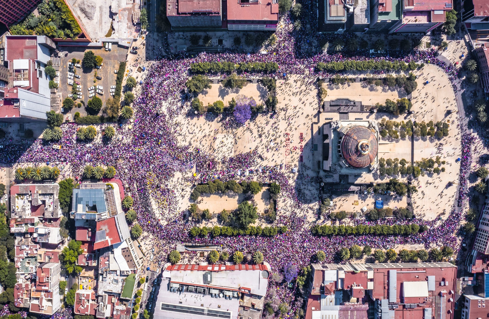
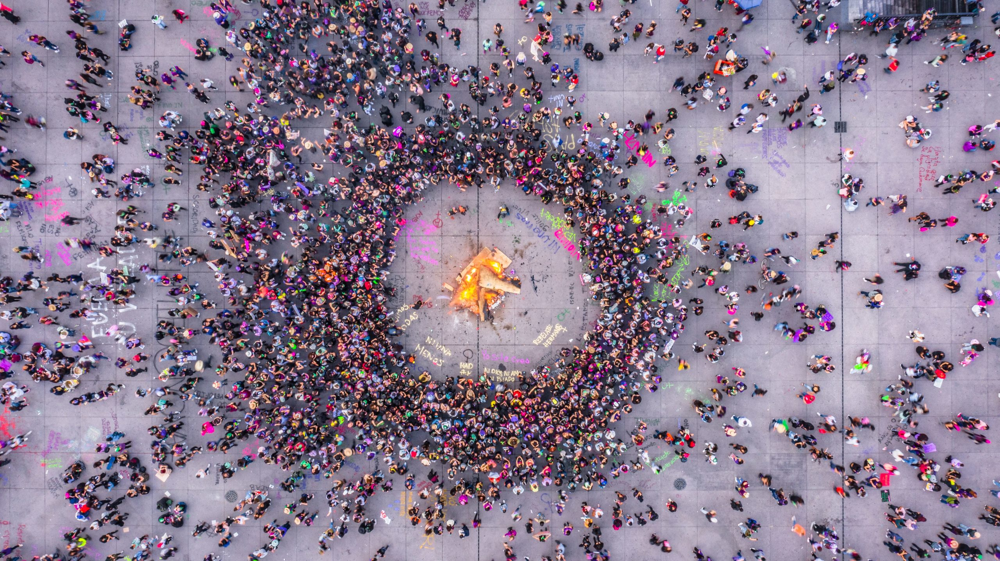
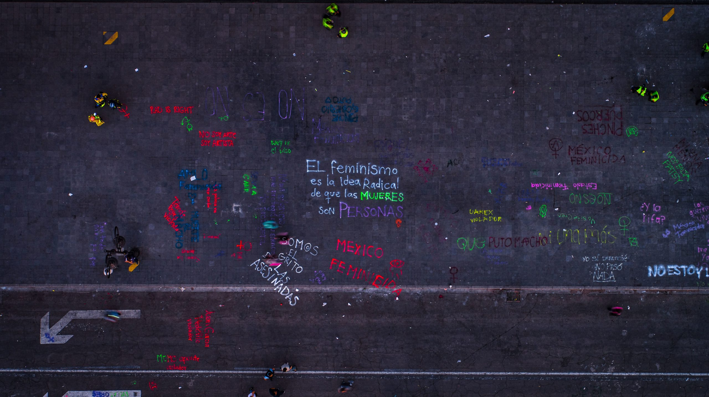
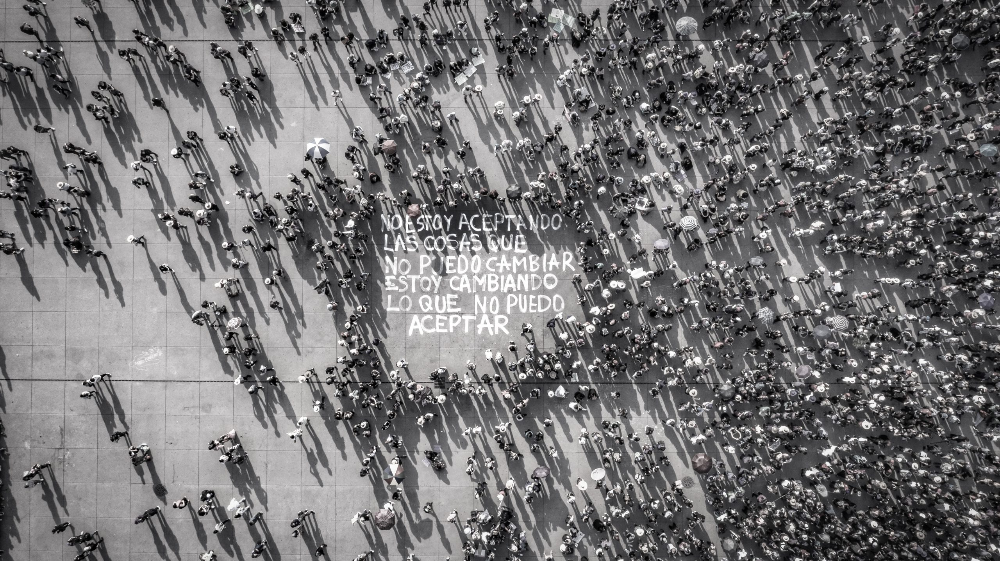
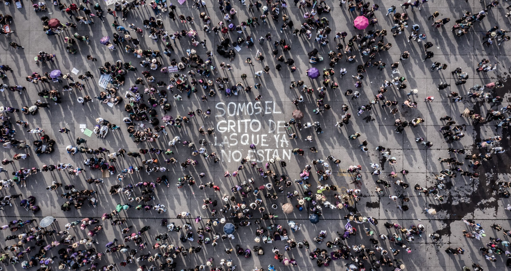

‘Mexico’s Glitter Revolution’
On uprisings as rational questions.
The essay alludes to the uprisings on August 12th and 16th, 2019 without considering several demonstrations in UNAM facilities, the International Day for the Elimination of Violence against Women march in November 25th, 2019 and “A Rapist in Your Way” (Un violador en tu camino) performance on November 29th, 2019.
In his book Urban rage: the revolt of the excluded, Dikeç (2017) presents uprisings as rational acts “product of urban inequality in the context of economic changes, institutional practices, social attitudes and policies”. However, he explains, governments see the uprisings from a ‘pathological framework’; they tend to focus “on the looting and the burning to negate the political significance of uprisings” rather than in the causes of the events. He states that the background of the uprisings is exclusion which can take "several forms like segregation and displacement, fed on particular histories of oppression like slavery or colonialism”. Yet, the cases presented do not discuss exclusion fed on gender-based oppression. This paper elaborates on how the feminist ‘Glitter Revolution’ in Mexico is also a rational act questioning systematised oppression in public spaces to society and to the state.
The conditions of gender-based violence in Mexico are alarming. It ranked 103 of 167 in the list from best to worst countries to be a woman (Conant, 2019). Around nine women are killed everyday (“La violencia contra las mujeres”, 2018). Since 2015, there have been more than 3,200 feminicides, and only in the first semester of 2019, 470 femicides were registered (Galván, 2019). Moreover, 70% of female population manifested a feeling of insecurity in the streets and public transport (ENVIPE, 2018). They dress themselves not to call too much attention, wondering if the risk of going out alone at night is worth it, planning their routes beforehand, avoiding poorly lighted streets with little traffic, thinking they may never come back. They change their urban dynamic in order to survive. They are “excluded from the rights and privileges that others enjoy” and overall they "are reminded of their deprivation on a daily basis in their everyday urban lives” (Dikeç, 2017). However, this is only the general background of the riots; coming is what disturbed enough women to raise their voices against gender-based violence.
Oppression in Public Space
Following are the three reported cases of rape crimes committed by members of the Ministry of Public Safety (SSC) that triggered the uprisings. On the evening of July 10th, two policemen arrested a homeless 27 year-old woman in the streets of Tabacalera, a neighbourhood in the centre of Mexico City. They took her by force to a hotel nearby and raped her (“Al menos 3 agresiones sexuales”, 2019). Only one officer was accused.Three weeks later, on the early morning of August 3rd, a 17-year-old girl was coming back home from a party. Her friends had left her near her house in Azcapotzalco, an industrial municipality in the periphery of Mexico City. When she was walking home a patrol car approached her; she was sexually abused by at least four officers inside the vehicle (Fuentes, 2019). Less than a week later, on August 8th, a 16-year- old student was raped by a member of the police force in the women’s restrooms of the Museum of the Photographic Archive located in the historic centre of Mexico City (“Detienen a policía”, 2019). The officer was arrested.
 Palacio Nacional by Santiago Arau | March 8th, 2020
This was the third rape crime perpetrated by a member of the police in a month. The next day, the head of the Ministry of Public Safety (SSC) announced that the four policemen who raped the girl in Azcapotzalco were still exercising their functions, as no evidence was found yet though there’s a state’s CCTV system in most of the streets in Mexico City (“Policías acusados de violación”, 2019). Moreover, it was declared that a leak of information from the investigation file was preventing her from moving forward with declarations (“En caso de violación en Azcapotzalco”, 2019). That third rape together with the policemen still exercising and the leak of information bursted out in an uprising in the next working day after the events.
Uprisings in Public Space
On the afternoon of August 12th, around 300 women broke out under the battle-cry “They don’t protect me, they rape me!” (“Al grito de violadores”, 2019). The head of the Ministry of Public Safety (SSC) tried to speak with the protesters, but it was late for a dialogue, they wanted actions. The women answered throwing pink glitter at him. They were chanting “Who protects me from the police?” and “The police don’t protect me, my friends do.” They did graffiti along the way and finally arrived to the State Prosecutor's Office which was surrounded by policemen. The protesters broke the siege. The uprising ended with women smashing the glass facade of the building, painting and damaging the furniture of the reception (Muñiz, 2019).
There was not any kind of action from the government trying to terminate the demonstration. However, that same evening, Claudia Sheinbaum, governor of Mexico City, declared that the events of that afternoon were not considered a social demonstration regarding gender-based violence or feminicides but an act of incitement to violence. She condemned their acts, stated that investigation files would be open to prosecute the provocateurs and assured that the government would never answer back with violence and that they would not answer at all to any provocations (“Provocación”, 2019). That bursted out in a larger uprising; the second one in a week.
 Monumento a la Revolución by Santiago Arau | March 8th, 2020
On August 16th, thousands of women all over Mexico took to the streets of their cities chanting “Demanding justice is not an act of provocation!” They were angry, exhausted, fearless and filled with rage. Everyone was there; kids, elderly persons, teenagers, students, mothers, affluent and non-affluent groups. It was a national phenomenon as well, besides Mexico City, women were protesting in Aguascalientes, Saltillo, Querétaro, Tuxtla Gutiérrez, Puebla, Mazatlán, Culiacán, Xalapa, León, Toluca, Monterrey, Oaxaca, Morelia, San Cristóbal de las Casas, Chihuahua and Veracruz; the latter denominated the most dangerous city to live in Mexico for a woman (“Información sobre violencia”, 2019). The concentration in Mexico City, the largest one, gathered at Glorieta de Insurgentes, a very central and well-connected public square where the Ministry of Public Safety (SSC) is also located. It started with different feminist associations reading manifestos against the systemic gender-based violence and the lack of action from the government. They started moving around Glorieta de Insurgentes, chanting, dancing and doing graffiti on the pavement, walls and urban furniture. They repeated the glitter-bombing as a symbol of protest. Men were not allowed to join the demonstration, they wanted to produce a safe space for all the protesters.
However, what started as a pacific movement turned into a tenser demonstration when at different points male and female journalists began to film the movement, the protesters asked them to leave and some confrontations bursted against the ones that would not do so. Eventually, some groups of women started to smash glasses, lit fires and ‘vandalise’ the metrobús (the bus rapid transit system) station which surrounds Glorieta de Insurgentes. Another group began to walk towards the Ángel de la Independencia monument, probably the most important one in Mexico. This is a common meeting point for demonstrations, it was inaugurated in 1910 to celebrate the 100 anniversary of the independence from the Spaniards. On their way, they smashed the glazed facade of a bank, vandalised buildings, confronted police women and some associations like the Red Cross, they broke into a police station and started fires as well. After 4 hours, the uprising finished at the Ángel de la Independencia monument which was ‘vandalised’, filled of pink, green, purple, red and black graffiti saying ‘Murderer nation’ and ‘Rapist police’ (Violicía) and ‘glitter- bombed’ as it had never been done before. Again, there was no sign from the government trying to end the uprising. However, the statements from mass media were sound and clear.
The Statements of Mass Media
Several mass media commentators, when live broadcasting the demonstration, expressed that all the violent acts only discredited the power of the uprising. The next day, the most important newspapers in Mexico showed the following phrases in their headers “Protest, fury and vandalism”, “Fury explodes in demonstration against violence against women”, “Feminist march out of control”, “Violence stains the march of women”, “Again, violence is imposed on the march”, “March for gender equity ends in vandalism”... The collective DataPop took the lead to show the priorities of the coverage of online mass media comparing the published notes regarding the rape crimes to the ones talking about metrobús, journalists and principally the Ángel de la Independencia monument. From August 1st to August 20th, on average 7.6 notes talking about rape crimes were posted daily whereas 51 notes talked about the Ángel de la Independencia monument. The answer from society to the demonstrations and to these portrayals on mass media was very present on social networks. Throughout the web one can find comments, groups and webpages where the movement is not only condemned but challenged and discredited. The most common phrases in all types of communication are “This is not the way”, “That is not the right way”, and “Not like this, women” (Ojeda, 2019) referring to the violence and mainly to the vandalism done to public spaces and monuments. The biggest concern was if the Ángel de la Independencia monument could be restored.
 Zócalo by Santiago Arau | March 8th, 2020
Then, which one is the way? Why are these protests seen from a ‘pathological framework’, confounding the violence with the political significance of the uprising? Women were expected once again to behave peacefully and ask nicely for something they should not be asking for. This was not the first time demonstrations against gender-based violence happened. Nor were uprisings the first action to tackle the problem. However, given the lack of awareness and understanding from society and the state, protests were the last resource available for them to be listened. Uprisings are not “intrinsic acts of violence... [T]hey connect to larger dynamics” (Dikeç, 2004). Women became tired of the systematised violence they were experiencing everyday in public spaces like the street or the restrooms of a museum, and what triggered all that accumulated rage was the fact that they were abused by the persons and institutions who were supposed to protect them. Then, it should not have taken anyone by surprise when women decided to leave a mark in the places where they have been hurt and humiliated, where they are killed day-to-day, raped, abused, harassed and kidnapped. The riots were not a violent answer. They were a question to society and to the government. A question which society answered with more systematised violence, and which the state decided not to answer.
The Statements of the State
Some hours after the uprising began, governor Claudia Sheinbaum released a statement in one of her social networks. She declared that “together with the government, they respected the protesters who peacefully exercised their right to demonstrate. However, the violence of a few who only delegitimise the defence of women's rights could not be justified. Mexico City government would not fall into the provocation of using violence in the midst of demonstrations. Nevertheless, in the case of direct attacks to journalists, people, and buildings, investigation files for the ‘criminals’ would be opened without impunity.” Moreover, President Andrés Manuel López Obrador, said at a press conference on August 19th that he was informed about and supported the action of the governor of avoiding the use of force. During a year of administration, he has refused to use any kind of violence under his philosophy “hugs, no bullets.” Probably that is why the uprisings did not last longer unlike other cases where repression from the government seemed to evoke more violence. However, if once again they would not answer to acts of provocation, what would be their answer?
“The state’s discursive articulations establish how solutions are shaped” (Dikeç, 2004). For example, resolutions to gender-based violence from past governments include a variety of laws and measures, and in Dikeç words, statements that limit their actions very specifically. In 1970, a few years after the opening of Mexico City’s subway, women complained about the ‘inconvenience’ of traveling in crowded wagons (“Separación de Hombres y Mujeres”, 2011). After that, the two first coaches were limited to the use of women. By 2005, under the program “Zero Harassment” (Acoso Cero), the third rail car was also restricted to the use of women. In 2007, a new program called “Let’s travel safe, [women]” (Viajemos Seguras) also designated a special area for women in the front part of metrobús (“Programa Viajemos Seguras”, 2010). And in 2008, that measure was extended to the buses under the program called ‘Atenea’, which destined 154 units only for women (“Atenea”, 2018).
 Zócalo by Santiago Arau | March 8th, 2020
From this ‘temporary’ measure to public policies, the government seemed to state that women are the problem; special wagons for women, special institutions for women, special laws for women, special statistical categories for women. Why not wagons for rapists instead of wagons for women? These mechanisms have become a usual part of the everyday lives of women, an interiorised urban dynamic that no one questions, and above all, a daily reminder of the gender-based violence they suffer in a society that practices it systemically. For at least 50 years, the government has not been able to address the problem of gender-based violence in public spaces for following the same discourse. The consequences of these statements are present in the ways women identify and are identified. Common reactions of men and women to rape crimes and other abuses include “That is what happens to her for going out at night” or “This is what happens to her for dressing like that”; as if the women were to blame for all the crimes that happen to them. And now we can see the violent results of unfair systematic statements.
Questioning the use of public space
The state has failed in warranting safe public spaces and public security, and society has followed in socially reproducing the unsafe conditions, so that women had to create it themselves. The demonstrations of last August were the proof that the same public space where they are killed, raped, kidnapped and abused can become a healthy space; for those four hours nobody would harm them because they, together, had produced a safe space by protecting and supporting each other. A space, that was socially produced by the systematic violence of society and the state, could be as well socially changed by the demonstrations; by having the courage of raising their voices against unfair statements.
 Zócalo by Santiago Arau | March 8th, 2020
Discourses need to change in order to reconfigure “the way in which claims for justice are heard” (Dikeç, 2004). At that same press conference where the president of Mexico said that violence will never be the answer, he declared that, instead, the power of public opinion is to rule; when there is a problem the citizen’s themselves are to administer justice. The state does not need to answer with violence or repression to a ‘minority’ that is already oppressed by society itself. And the dosage of justice that has been administered to the protesters was shown in the shape of hate speech. After the uprisings, all around the web one could find statements like “Feminazis” and “This was not a demonstration, this is vandalism to public spaces” together with the ones presented before (Ojeda, 2019).
These statements are again the consequences of the discursive constitution of uprisings. They mostly challenge the damage to material common property (like a public transport station or a monument) disregarding the political significance of the act itself. What the feminist movement is more worried about is that it seems that society is more concerned about a painted wall than the loss of a life; as if a painted wall were more important just because, in a sense, society owns it. What is wrong about painting a monument? Perhaps that it is a spatial and graphic depiction of an unfair and abusive dynamic so interiorised that no one dares to question.
Conclusions
When reviewing Mexico’s Glitter Revolution, urban theories should reconsider the preconditions of two practices. On one hand, the value of the testimonials of uprisings in public spaces should be registered and analysed. Whether the decision is to restore monuments or not, the graphic representations of the demonstration should be considered relevant elements in order to understand the causes of it rather than easily claiming them to be vandalism. On the other hand, public policies and measures have so far focused on the oppressed and the excluded as the problem. The discourse that shapes these actions has to be evaluated and changed. The discursive constitution of new laws, institutions, and strategies needs to prevent public space from being socially shaped in a negative way.
The ‘statements of the state’ have produced a systemic gender-based violence that seems impossible to trace back in time. As a community, it is time to question our everyday practices and the discourse that shapes them so we can read the causes of the uprisings rather than the unfolding events. If so far society and the government have failed in focusing on the political significance of demonstrations, have the demonstrations failed too? Can they even be considered successful? The success is the demonstration in itself. When the oppressed and excluded finally get the courage to socially change a space that has been replicated by the powerful for so long, when they take a chance to inhabit fearlessly the public urban space that belongs as much to the violators as to them, when they at last raise the question to society and the state... That is the success.
 Zócalo by Santiago Arau | March 8th, 2020
- Al grito de "violadores", cientos de mujeres estallaron contra la policía en la Ciudad de México [Newspaper article]. (2019, August 12). infobae. Retrieved from https://www.infobae.com/america/mexico/ 2019/08/12/al-grito-de-violadores-cientos-de-mujeres-estallaron-contra-la-policia-en-la-ciudad-de- mexico/.
- Al menos 3 agresiones sexuales cometidas por policías de la CdMx, entre julio y agosto; hay 2 agentes procesados [Newspaper article]. (2019, Agosto 9). Aristegui Noticias. Retrieved from https:// aristeguinoticias.com/0908/mexico/al-menos-3-agresiones-sexuales-cometidas-por-policias-de-la- cdmx-entre-julio-y-agosto-hay-2-agentes-procesados/.
- Atenea, transporte emblema para las mujeres de CDMX (2018, March 8). Gobierno de la Ciudad de México. Retrieved from https://www.rtp.cdmx.gob.mx/comunicacion/nota/atenea-transporte-emblema-para- las-mujeres-de-cdmx
- Conant, E. (2019, October 15). The best and worst countries to be a woman. National Geographic. Retrieved from https://www.nationalgeographic.com/culture/2019/10/peril-progress-prosperity-womens-well- being-around-the-world-feature/.
- Detienen a policía por abusar de menor en Museo de Archivo de la Fotografía [Newspaper article]. (2019, August 9). Retrieved from https://www.razon.com.mx/mexico/policia-acusado-de-abuso-sexual- museo-de-archivo-de-la-fotografia-ssp-policia-pbi-cdmx-agresion-sexual-menor/.
- Dikeç, M. (2004). Voices into noises: ideological determination of unarticulated justice movements. Space and Polity (pp. 191–208).
- Dikeç, M. (2017). Urban rage: the revolt of the excluded. New Haven: Yale University Press.
- En caso de violación en Azcapotzalco, PGJ abrirá carpeta de investigación sin involucrar policías [Newspaper article]. (2019, August 15). MVS Noticias. Retrieved from https://mvsnoticias.com/ podcasts/en-directo-con-ana-francisca-vega/en-caso-de-violacion-en-azcapotzalco-pgj-abrira- carpeta-de-investigacion-sin-involucrar-policias/.
- Encuesta Nacional de Victimización y Percepción sobre Seguridad Pública (ENVIPE) [Press release]. (2018, September 25). INEGI. Retrieved from https://www.inegi.org.mx/contenidos/saladeprensa/boletines/ 2018/EstSegPub/envipe2018_09.pdf.
- Fuentes, D. (2019, August 6). Presuntos policías le preguntaron por qué caminaba sola en la noche... Y la violaron [Newspaper article]. El Universal. Retrieved from https://www.eluniversal.com.mx/ metropoli/presuntos-policias-le-preguntaron-por-que-caminaba-sola-en-la-noche-y-la-violaron.
- Galván, M. (2019, August 19). 14 datos de la violencia de género que explican el enojo de las mujeres. Expansión. Retrieved from https://politica.expansion.mx/mexico/2019/08/19/datos-sobre-violencia- contra-mujeres-mexico.
- Información sobre violencia contra las mujeres [Report]. Secretaría de Seguridad y Protección Ciudadana (SSC). Retrieved from https://drive.google.com/file/d/1n-fC8tMPcIxCuaCMEFoPoO9LnVzFCKu8/ view
- La violencia contra las mujeres no es normal ni tolerable. (2018, November 22). ONU México. Retrieved from http://www.onu.org.mx/la-violencia-contra-las-mujeres-no-es-normal-ni-tolerable/.
- Lira, V. (2019, August 22). Mexico’s Glitter Revolution: How Should Women Protest?. Merion West. Retrieved from https://merionwest.com/2019/08/22/mexicos-glitter-revolution-how-should-women- protest/.
- Muñiz, N. (2019, August 12). Cientos de mujeres protestan contra violencia policiaca en CDMX [Newspaper article]. Plumas Atómicas. Retrieved from https://plumasatomicas.com/feminismo/danos-protesta- mujeres-cdmx-jesus-orta/.
- Ojeda, I. (2019, September 12). Las que protestan por ataques a mujeres en las calles viven bajo amenazas constantes en la Red [Newspaper article]. SinEmbargo. Retrieved from https://www.sinembargo.mx/ 12-09-2019/3643860.
- Policías acusados de violación ya están en funciones: Jesús Orta [Newspaper article]. (2019, August 9). ADN40. Retrieved from https://www.adn40.mx/noticia/seguridad/nota/2019-08-09-14-25/policias- acusados-de-violacion-ya-estan-en-funciones--jesus-orta/.
- Programa Viajemos Seguras (2010). Metrobús. Retrieved from http://data.metrobus.cdmx.gob.mx/ mujeres.html.
- Provocación, protesta de mujeres en la PGJ-CDMX: Sheinbaum [Online video]. (2019, August 12). Noticieros Televisa. Retrieved from https://www.youtube.com/watch? time_continue=18&v=LhGwnxLgGGw&feature=emb_logo
- Separación de Hombres y Mujeres. Gobierno de la Ciudad de México (2011, Abril 12). Retrieved from https://www.metro.cdmx.gob.mx/comunicacion/nota/separacionn-de-hombres-y-mujeres
- Soja, E. (2010). The city and spatial justice. In B. Bret, P. Gervais-Lambony, C. Hancock and F. Landy (Eds). Justices et Injustices Spatiales (pp. 55–74). Paris: Presses Univeritaires de Paris Ouest.